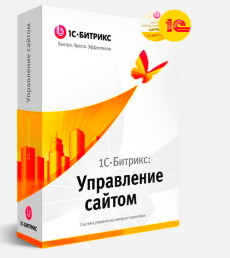

Создание сайтов под ключ в Беларуси на CMS 1С Битрикс.
Мы предлагаем Вам и вашему бизнесу качественные услуги по созданию сайтов на базе лучшей в Рунете системы управления контентом 1С Битрикс (1c bitrix).
Что такое «1С-Битрикс»?
На данный момент CMS 1С-Битрикс занимает первое место среди коммерческих CMS русскоязычного сегмента сети интернет. С помощью этого инструмента, кмс 1с Битрикс, эффективно решаются любые задачи сайтостроения, начиная от простейшего сайта визитки или лендинга (landing page), которые заказывают небольшие компании и индивидуальные предприниматели, и заканчивая созданием интернет магазинов любой сложности, крупных порталов, сайтов каталогов.
С помощью системы управления контентом 1С-битрикс реализуются самые грандиозные интернет-проекты! Сайт, разработанный на «1С-Битрикс», полностью совместим с другими продуктами 1С.
Что мы можем Вам предложить:
- Работая с нами, Вы можете заказать создание сайта, либо купить готовый сайт, разработанный на 1С- Битрикс.
- Разработка дизайна для вашего сайта
- Создание сайта любой сложности под ключ
- Создание B2C и B2B интернет-магазинов под ключ
- подпункт
- подпункт
- подпункт
- Наполнение сайта
- Первичную SEO оптимизацию вашего нового сайта.
- Настройку контекстной и таргетированной рекламы.
- Разработку мобильных приложений для вашего бизнес проекта.
Заказать разработку, создание современного сайта по выгодной цене в Беларуси вы можете, обратившись к нам!
Мы – компания «Новый сайт», заняли первое место в рейтинге веб-студий Республики Беларусь 2020!
Более 10 лет мы создаем сайты известным компаниям Минска, Могилева, Витебска, Бреста, Гродно и Гомеля. За это время нашими клиентами стали такие крупные бренды, как: Беларусбанк, сеть супермаркетов «Соседи», Холдинг «Атлант», «Альфа-Банк» и многие другие.
Обратившись к нам за разработкой сайта, вы получите множество преимуществ, и все в одном месте:
- Высокое качество выполнения работ по разработке сайта.
- Уникальный дизайн для вашего сайта.
- Приемлемую цену на создание сайта.
- Услуги хостинга для вашего сайта.
- Настроим Интеграцию с 1С.
- Интеграцию CRM системы.